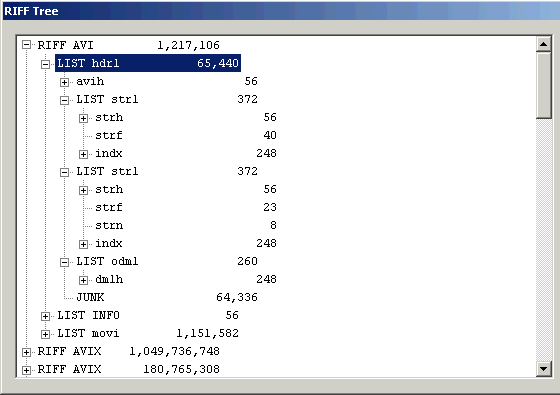

最終更新：2006年12月14日（訳：2007年1月9日）
この文書はHomepage - Alexander Noéにて公開されている文書「AVI File Format」をMakKiが個人的に翻訳したものですが，原著者の許諾が得られましたのでここに公開します．
翻訳版については煮るなり焼くなりしていただいて構いませんが，原著者にまで迷惑がかかるような行為はご遠慮願います．
また，誤訳等の指摘はMakKiまでお願いします．
この文書が日本語圏の開発者の助けになれば幸いです．
AVIファイルフォーマットが登場してからかれこれ10年以上が経過した。しかしながら，AVIの構造だけでなく，不良デマルチプレクサや欠陥コーデックによる問題点とその回避法にまで言及している資料は皆無である．
この文書の目標は，上記で述べたようにAVIファイルの構造の説明だけではなく，欠陥マルチプレクサ/デマルチプレクサ/デコーダが蔓延るなかで，どのようにしてAVIファイルを扱えばよいかについて特に念入りに説明することである．
AVIファイル内には2種類の基本構造がある：
typedef struct {
DWORD dwFourCC
DWORD dwSize
BYTE data[dwSize] // ヘッダや映像/音声データを格納する
} CHUNK;
typedef struct {
DWORD dwList
DWORD dwSize
DWORD dwFourCC
BYTE data[dwSize-4] // リストやチャンクを格納する
} LIST;
一つのチャンクはビデオ，音声または字幕のデータが格納され，dwFourCCにはストリーム番号を表す2桁の16進数とデータ形式を表す2文字（dc=ビデオ，wb=音声，tx=字幕）が格納される．
dwFourCCおよびdwSizeの値は両方の構造体で同じ意味を持つ：
dwFourCCはチャンクの種類を表し（例えば 'hdrl' は「ヘッダリスト」），
dwSizeはチャンクやリストの，dwSizeより後ろのデータのサイズが格納される．
リストの場合，この値のうち4バイトがdwFourCCに最初から使用されている！
dwListの値は'RIFF'（RIFFリスト）または'LIST'（リスト）である．
基本的には，AVIファイル形式は3種類に分けられる：
この文書はOpen-DML 1.02ファイル形式の主要な部分とともに，適切な（かつフリーで入手可能な）フィルタがインストールされていれば一般的なプレイヤで動作するいくつかの付け足し（ハック）も説明する． AVI 1.0には無いOpen-DMLのみの特徴については，Open-DMLのみと記す．
dwFourCC = 'AVI ' であるRIFFリストを「RIFF-AVIリスト」と呼ぶ．
また，dwFourCC = 'AVIX' のRIFFリストは「RIFF-AVIXリスト」と呼ぶ．
全てのAVIファイルは以下の構造をとる：
RIFF AVI // 必須
{ RIFF AVIX } // Open-DMLのみ
これらのリストのサイズの上限は，uint32の上限とは異なり，4GBではない．
size(RIFF-AVI) < 2 GBsize(RIFF-AVI) < 1 GB（!!）（Virtual Dubのようないくつかのソフトでは 2GBとしている）size(RIFF-AVIX) < 2 GB古典的インデックス（3.1節を参照）が見つからないから最初のRIFF-AVIを全部読み込ませろとWindows XPがせがむ時や，古典的インデックスがオーバーヘッドになってしまう時は，RIFF-AVIリストを出来るだけ小さくすることを推奨する．
AVIファイルのヘッダ領域を次に示す：

続く項目ではこれらのリストやチャンクの意味を説明する．
この構造体は次のように定義される：
typedef struct {
DWORD dwMicroSecPerFrame; // フレーム持続時間（または 0）
DWORD dwMaxBytesPerSec; // 転送レートの最大値
DWORD dwPaddingGranularity; // このサイズの倍数にパディングされる
DWORD dwFlags; // 固定フラグ
DWORD dwTotalFrames; // # ファイル内のフレーム数
DWORD dwInitialFrames;
DWORD dwStreams;
DWORD dwSuggestedBufferSize;
DWORD dwWidth;
DWORD dwHeight;
} MainAVIHeader;
残念なことに，これらの変数名は必ずしも値の意味を表しているとは言えない．
dwMicroSecPerFramedwMicroSecPerFrameには書き込まない．
したがって，この値を信用すべきではない！
dwMaxBytesPerSecdwPaddingGranularitydwFlagsdwTotalFramesdwInitialFramesdwStreamsdwSuggestedBufferSizedwWidthdwHeightAVIF_HASINDEXAVIF_MUSTUSEINDEXAVIF_ISINTERLEAVEDAVIF_WASCAPTUREFILEAVIF_COPYRIGHTEDAVIF_TRUSTCKTYPE（Open-DMLのみ！）
それぞれのストリームにつき，一つのstrlリストが存在する．
hdrl内のstrlリストの数がMainAVIHeader::dwStreamsと異なる場合，致命的なエラーとして報告すべきである．
typedef struct {
FOURCC fccType;
FOURCC fccHandler;
DWORD dwFlags;
WORD wPriority;
WORD wLanguage;
DWORD dwInitialFrames;
DWORD dwScale;
DWORD dwRate; /* dwRate / dwScale == samples/second */
DWORD dwStart;
DWORD dwLength; /* 上記の単位で… */
DWORD dwSuggestedBufferSize;
DWORD dwQuality;
DWORD dwSampleSize;
RECT rcFrame;
} AVIStreamHeader;
繰り返しになるが，変数名が意味通りとは限らない．
fccType'vids' - ビデオ'auds' - 音声'txts' - 字幕fccHandlerdwFlagsAVISF_DISABLED - このストリームは初期状態では有効にすべきでないAVISF_VIDEO_PALCHANGES - このビデオストリームは再生中にカラーパレットが変化する．dwInitialFramesdwRate / dwScale =samples / second（音声） または frames / second（ビデオ）．dwScaleとdwRateは互いに素にすべきである．
例えば25/1の代わりに10,000,000/400,000を入れた場合，あるハードウェアMPEG4プレイヤでは再生できなくなることがすでに報告されている．
dwStartdwLengthdwRateとdwScaleで定義される単位でのストリームのサイズdwSuggestedBufferSizedwQualitydwSampleSize
strfチャンクの構造体はメディアの種類に依存する．
ビデオストリームではBITMAPINFOHEADER構造体，音声ストリームではWAVEFORMATEX構造体を使う．
このチャンクはストリームの上位インデックスを格納する． 3.2節を参照．
この要素ではストリームの名称を格納する． 名称はプレーンASCIIを使うべきであり，特にUTF-8は使うべきではない．
AVI 1.0で見られるインデックスについて説明する．
このインデックスはRIFF-AVIリストの中のmoviリストの後ろに置かれる．
idx1チャンクのデータ領域は次に示す構造を持つ．
AVIINDEXENTRY index_entry[n]
typedef struct {
DWORD ckid;
DWORD dwFlags;
DWORD dwChunkOffset;
DWORD dwChunkLength;
} AVIINDEXENTRY;
これらの値は以下の意味を持つ
ckiddwFlagsAVIIF_KEYFRAME : 参照するチャンクはキーフレーム．AVIIF_LIST : チャンクではなく，リストを参照．AVIIF_FIRSTPART : このチャンクは追随するフレームを必要とし，単独では使えない．AVIIF_LASTPART : このチャンクは先行するフレームを必要とし，単独では使えない．AVIIF_NOTIME : 対応するチャンクの持続時間は0．AVIIF_FIRSTPARTやAVIIF_LASTPARTが指定されていないなら，そのチャンクは単独で使用できる．
言い換えれば，チャンクは対応するストリームの少なくとも1パケット以上である．
これはAVIファイルにVBR音声ストリームを格納する時に重要となる（5.4節を参照．）
dwChunkOffset'movi'識別子の最初のバイトからの相対位置のどちらでも指定できる．
AVIファイルパーサはどちらの種類でも扱えなければならない．
dwChunkLengthOpen-DMLインデックスチャンクの基本的な構造体を示す：
typedef struct _aviindex_chunk {
FOURCC fcc;
DWORD cb;
WORD wLongsPerEntry;
BYTE bIndexSubType;
BYTE bIndexType;
DWORD nEntriesInUse;
DWORD dwChunkID;
DWORD dwReserved[3];
struct _aviindex_entry {
DWORD adw[wLongsPerEntry];
} aIndex [ ];
} AVIINDEXCHUNK;
Open-DMLインデックス構造体のあらゆるサブタイプはこの構造体と互換性を持つ． それぞれの要素は次の意味をもつ：
fcc, cbCHUNK構造体のdwFourCC，dwSizeと同じ．wLongsPerEntryaIndex[i]のサイズは4*wLongsPerEntryバイトである．
（aIndex[i]の内容はインデックスの種類に依存する）
bIndexType, bIndexSubTypenEntriesInUseaIndex[0] .. aIndex[nEntriesInUse-1]が有効dwChunkId'00dc'．
このため，一つのインデックスチャンクは同一のストリームのデータしか参照できない．
上位のインデックス（'super index'）は他のインデックスチャンクを参照する． この構造体を以下に示す：
typedef struct _avisuperindex_chunk {
FOURCC fcc;
DWORD cd;
WORD wLongsPerEntry;
BYTE bIndexSubType;
BYTE bIndexType;
DWORD nEntriesInUse;
DWORD dwChunkId;
DWORD dwReserved[3];
struct _avisuperindex_entry {
__int64 qwOffset;
DWORD dwSize;
DWORD dwDuration;
} aIndex [ ];
} AVISUPERINDEX;
次の値が具体的に規定されている：
bIndexType = AVI_INDEX_OF_INDEXESbIndexSubType = [ AVI_INDEX_2FIELD | 0 ]wLongsPerEntry = 4
ご覧の通り，aIndex配列の個々の項目は4つのDWORDで構成されている．
これらの値の意味を次に示す：
qwOffsetdwSizedwDurationこのインデックスタイプではビデオ，音声，または字幕のチャンクを参照する． これもまた一般的なOpen-DMLインデックスの派生型であり，次の構造をしている：
typedef struct _avistdindex_chunk {
FOURCC fcc;
DWORD cd;
WORD wLongsPerEntry;
BYTE bIndexSubType;
BYTE bIndexType;
DWORD nEntriesInUse;
DWORD dwChunkId;
__int64 qwBaseOffset;
DWORD dwReserved3;
struct _avistdindex_entry {
DWORD dwOffset;
DWORD dwSize;
} aIndex [ ];
} AVISTDINDEX;
wLongsPerEntryaIndex[i]は8バイトなので，wLongsPerEntry = 2
bIndexSubType= 0bIndexType= AVI_INDEX_OF_CHUNKSqwBaseOffsetAVISTDINDEXのそれぞれのdwOffsetに加算する．dwOffset, dwSizeCHUNKのデータ領域（チャンクヘッダではない！）の位置（qwBaseOffset + dwOffset）と長さを示す．
nEntriesInUseの数だけこのペアがあり，それぞれにつき1フレームのビデオ/音声が対応している．
dwSizeの31ビット目はフレームタイプを表す：このビットがセットされているなら，そのフレームはキーフレームではない．
Open-DMLの仕様では，インデックスの参照する“データ領域”はチャンクヘッダに続く場所であるとは明記されていない．
すなわち，フレームごとに一つのインデックスエントリが存在する限り，複数のフレームを一つのチャンクに格納することも可能である．
この方法ならチャンクヘッダを持つのは少数のフレームだけで済み，通常のOpen-DMLファイルより50%までオーバーヘッドを削減できる．
もちろんメインAVIヘッダではAVIF_MUSTUSEINDEXフラグをセットして，強制的にパーサにインデックスを使わせる必要がある．
この方法で作られたファイルを“省オーバーヘッドAVIファイル”と呼ぶ．
これは独自形式のAVIファイルではない． Open-DMLインデックスとフラグを正しく扱えるなら，どんなパーサでもこのようなファイルと互換するはずである． MicrosoftのAVIスプリッタだけでなくVirtualDub(Mod)でも，現状のままで，このようなファイルを問題なく扱える．
ここまでの節ではOpen-DMLインデックスがどのようなものかについて説明した． この節ではその使い方について扱う．
それぞれのストリームはストリームヘッダリスト（'strl'）内に'indx'チャンクを一つ含む．
このチャンクがSuper Indexチャンクである．
個々のスタンダードインデックスは64bitのオフセットとそこからの32bitの相対オフセットを含み，一つのスタンダードインデックスチャンクは4GBセグメントの内側だけを参照できる． したがってスタンダードインデックスは4GBファイルサイズ毎にストリームごとに必要である．
不幸なことに，Microsoftは仕様書をきちんと読んでいないようだ： ファイルに3本以上音声ストリームが含まれている場合，そのような巨大なスタンダードインデックスチャンクを使うファイルをMicrosoftのAVIスプリッタは認識しない． なので，小分けにして使う必要がある． テストの結果15000エントリ以内であればMicrosoftのAVIスプリッタも適切に処理する．
moviリストはビデオや音声，字幕，（二次的な）インデックスデータを格納する．
これらはrec リストでグループ化できる．
例えば：
LIST movi
LIST rec
01wb
01wb
02wb
03wb
03wb
03wb
00dc
00dc
LIST rec
01wb
02wb
LIST rec
...
...
ix01
ix02
ix03
....
....
次のチャンクヘッダIDが定義されている：
..wb : 音声チャンク..dc : ビデオチャンク..tx : 字幕チャンクix.. : スタンダードインデックスブロック
rec リストへのグループ化はMicrosoftのAVIスプリッタでの再生では過度のシークを抑制できるが，いくつかの独立した再生機器では再生できない．
ストリームのチャンクの最大サイズは対応するdwSuggestedBufferSizeの値より小さくすべきである．
そうでないといくつかのプレイヤ，特にMicrosoftのAVIスプリッタが機能不全に陥る．
wFormatTag = 0x0055MP3の音声ストリームはそれ以上分解できないフレームの集合である． MP3デコーダはフレームの一部分だけでも扱えるはずだが，それでもAVIのチャンクにはMP3の完全なフレーム単位で格納することを推奨する。
strfチャンクは，WAVEFORMATEX構造体を拡張したMPEGLAYER3WAVEFORMAT構造体を格納する：
typedef struct mpeglayer3waveformat_tag {
WAVEFORMATEX wfx;
WORD wID;
DWORD fdwFlags;
WORD nBlockSize;
WORD nFramesPerBlock;
WORD nCodecDelay;
} MPEGLAYER3WAVEFORMAT;
重要：この構造体はMP3（'MPEG Layer 3'）専用であり，MP1やMP2（'MPEG Layer 1/2'）には使用しない．
MP3ストリームが可変ビットレートの場合は，DirectShowが適切なシークをできるように手を加えなければならない． AVIファイルでのVBR音声ストリームの詳細は5.4節を参照．
残念なことに，その方法は次の点において十分な考慮がされていない： サンプルレートが32kHz以下でも1152バイトより大きいMP3フレームが作成可能である． 5.4節を読み理解したなら，MP3では通常用いられるようにnBlockSizeが1152の時，なぜそのようなMP3ストリームが（）再生不能になるかわかるだろう． この問題は大きな値を用いることで解決できる． しかし，いくつかのソフトはこの値が1152であるときだけ，MP3ストリームをVBRとして読み込む． 言い換えると，AVIファイルでのMP3のVBRストリームにおいて，小さいサンプルレートと高いビットレートの組み合わせは問題となる．
wFormatTag = 0x2000AC3をAVIに格納するのは他の音声形式より問題が多い． その理由は多くのデコーダ（ソフトウェア・ハードウェア）が壊れていることにある。
AC3のストリームはMP3と同様，独立した，分解できないフレームの集合である．
AVIファイルのどの音声チャンクも少数の（完全な！）AC3フレームを格納する必要がある．
そうでないと，いくつかのAC3デコーダはチャンクの持続時間の計算を間違える．
音声ストリームはDirectShowにおいて再生のマスターストリームとして使われるので，その持続時間計算が狂うとビデオの再生がぎくしゃくすることになる．
理論上は，チャンクには1つのAC3フレームが妥当だが，そのようなストリームを再生できないハードウェアデコーダもある．
一つのチャンクに6以上のAC3フレームを格納した場合，再生速度が早くなってしまう．
したがって，ひとつのAVIチャンクには2から5のAC3フレームを格納することを推奨する．
wFormatTag = 0x2001一つのAVIチャンクに2から20のDTSフレームを入れることで正常に機能するように思われる． 私自身それ以上の数で試したことがないので分からないが，もしDTSのハードウェアデコーダを所持しているなら，是非いくつまで可能かテストして報告してほしい． DTSフレームはAC3と同様，分離することはできない．
事実上全てのAVIファイルは可変ビットレートでフレーム持続時間一定（例えば40ms）のビデオストリームを含み，同様に，フレーム持続時間が一定ならば音声ストリームも可変ビットレートにすることができる． つまり，VorbisオーディオをAVIファイルに格納することは，これから説明する方法ではどうやってもうまくいかないことを意味している．
DirectShowにビデオストリームと同様にシークさせるためには，ストリームヘッダいくつかの値をビデオストリームと同じように設定する必要がある． すなわち：
dwRateはサンプルレートを格納するdwScaleは音声の1フレームあたりのサンプル数を格納するWAVEFORMATEX::nBlockAlignにはストリーム中で最大のフレームのサイズ（バイト単位）以上の値を入れなければならない．dwSampleSize = 0AVIIF_LASTPARTやAVIIF_FIRSTPARTはどのチャンクにも指定しない．
こうすることで，DirectShowは各チャンクがストリームヘッダで示された持続時間のパケットを含んでいると認識する．
こうして，それぞれのチャンクの持続時間が
[roundup(chunk size / nBlockAlign)] * dwScale / dwRate
であるとM$のAVIスプリッタに信じ込ませることが出来る．
もちろん，オーバーヘッドを削減するためにチャンクを構成する単位は1フレームより大きくても良い（第3章で説明した“オーバーヘッド節約モード”とは無関係）．
しかしながら，ストリームがVBRの場合，それぞれのチャンク（“普通の”ファイルの場合）またはインデックスの示す位置の音声データ（“省オーバーヘッドAVI”の場合）
は同じ数のサンプルを含むことが要求される．
またdwScaleにはそれに応じた値を入れる必要がある．
AACでは，1つの生AACフレームは普通1024以上のサンプルに及ぶ． しかしながら，ソースのコンテナによっては（例えばADTS），ソースファイルから等しい持続時間のパケットを取り出すことは理論上できない． この場合は，AVIにはAACストリームを多重化しないか，代わりに致命的エラーを表示することを強く推奨する．
AACやHE-AACにはWAVEFORMATEX構造体に該当するプライベートデータが要求される．
詳しくはAVI-Mux GUIのソースコード（FillASI.cpp）を参照せよ．
一般的には，AVIファイル形式は可変フレームレートのストリームをサポートしていない． しかしながら，通常のVBRストリームと同様に扱えるように，一定の持続時間を持つAVIチャンクを作れるならば，そのようなストリームををAVIファイルに格納することが出来る． これには基本的に2つの方法が存在する：
FFMPEGは後者の方法を使っている．
しかしながら，ffmpegはオーバーヘッドをさらに増大させている．
パディングチャンクを物理的には一つだけ格納し，パディングを要求する時はインデックスエントリを追加し，AVIF_MUSTUSEINDEXフラグを設定するという方法ではなく，それぞれのパディングチャンクにフレームヘッダをつけるので，毎回8バイトづつ浪費している．
そのようなストリームでは，wFormatTag = 0x566F のIDが使われている．
Vorbisの初期化パケット（OGG/Vorbisファイルの最初の3パケット）はstrfチャンクのプライベートデータとして保持されている．
それぞれのvorbis初期化パケットは次の方法で保持されている：
big_endian_int16 size; char data[size];
この章では，字幕の読み込みと選択にVSFilterを利用できるような，AVIファイルへ字幕を格納する方法を説明する．
1本の字幕ストリームは一つのチャンクに格納する． そのチャンクにはヘッダデータに続いて，STRやSSAファイル全体が格納される． そのファイルがUTF-8で符号化されている場合，BOMも含ませるべきである． ヘッダデータは次のように定義される：
char[4]; // 'GAB2'
BYTE 0x00;
WORD 0x02; // ユニコード
DWORD dwSize_name; // ストリーム名の長さ（バイト単位）
char name[dwSize_name]; // 字幕ストリーム名（UTF-16，ゼロ終端）
WORD 0x04;
DWORD dwSize; // SRT/SSAテキストファイルのサイズ
char data[dwSize]; // SRT/SSAファイル全体
typedef struct {
FOURCC fccType; // "txts"
FOURCC fccHandler; // 00 00 00 00
DWORD dwFlags;
WORD wPriority;
WORD wLanguage;
DWORD dwInitialFrames;
DWORD dwScale;
DWORD dwRate; // dwRate / dwScale == 持続時間（秒単位）
DWORD dwStart;
DWORD dwLength; // 上記の単位で．1にすべき
DWORD dwSuggestedBufferSize;
DWORD dwQuality;
DWORD dwSampleSize; // = 0 → VBRとして扱われる
RECT rcFrame; // 0, 0, 0, 0
} AVIStreamHeader;
このチャンクのサイズは0
strnチャンクはVSFilterには無視される．
従ってここは読み書きする必要はない．
AVIファイルで遅延を設定する方法の一つはAVIStreamHeader::dwStartの値を使うことである（2.1.3項を参照）．
しかしながら，全てのプレイヤがこの値を認識するわけではなく，そのようなファイルは正確に再生されない場合がある．
VirtualDubやその派生物（NanDub，VirtualDubMod）は遅延させるためにストリームの冒頭にデータを付け加える．
不幸なことに，これらのソフトはデータ形式を意識しておらず，0でただ埋めるだけである． この章ではこれらの0を‘不要データ’として扱う． そして，不要データ領域の持続時間の決定を含む，このようなファイルを読み込む方法について説明する．
もちろん正しいデータの開始点を，例えばMP3やAC3，DTSではフレームヘッダを見つける必要がある． 簡単に識別できるフレームヘッダが無いAACのような形式では，冒頭に0が加えられると壊れたストリームになってしまうだろう．
ストリームのビットレートが一定の場合，不要データ領域の持続時間は単純に garbage_length * data_rate である．
この場合，持続時間はチャンクを考慮して計算しなければならない：
5.4節で説明したように，1チャンクの持続時間は次のように計算できる．
roundup(size_of_chunk / strf::nBlockAlign) * duration_per_frame
このため，正しいデータの開始が第nチャンクのmバイト目から始まっている場合，不要データの持続時間は以下のようになる．
sum[i=0..n-1](duration(chunk[i])) + roundup(m/nBlockAlign)
この章では多重化する前にAVIファイルのオーバーヘッドを予測する方法を説明する． 覚書：省オーバーヘッドAVIファイルについては，この章の説明は適用できない． 基本的に，省オーバーヘッドAVIではビデオ/音声1フレームあたり8から9バイトのオーバーヘッドを生じる．
AVIファイルのオーバーヘッドはファイル中のチャンクの数に依存する． その他の構造はオーバーヘッド全体にはそれほど影響しない． 各チャンクは次に示す量のオーバーヘッドを生じる：
すなわち，各チャンクは16，24または32バイトのオーバーヘッドを生じる．
ビデオストリームでは比較的易しい：それぞれのビデオフレームが一つのチャンクになる．
音声ストリームのチャンク数はその形式と格納方法に依存する． 特定の形式では，特別な格納方法が必要もしくは標準とみなされ（5章を参照），オーバーヘッドはその設定から簡単に計算できる． その他の形式では，多重化設定のより詳細な情報が必要になる．
ビデオ：3時間，25fps（= 3,600,00 / 40ms = 90,000 フレーム毎時）
音声：2x MP3-VBR（チャンクあたり 1フレーム，フレームあたり 24ms）
音声：2x AC3（チャンクあたり 4フレーム，フレームあたり 32ms）
→ビデオ：270,000チャンク
→音声：2*150,000 + 2*3*28,125 = 468750チャンク
→合計：738,750チャンク
出典：AVI File Format (Alexander Noé, 2005-2006)
MakKi <makki_d210@yahoo.co.jp>